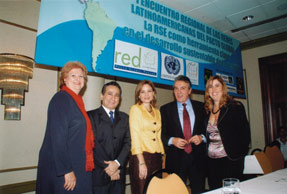

Home / News & Events / Archive / Latin American GC Networks Meet for the First Time
(Panama City, 25 May 2006) – More than 30 representatives of Latin American and Caribbean Global Compact networks gathered in Panama City/Panama on 23-25 May for the First Meeting of Latin American Country Networks. The country networks were represented by the national focal points, as well as by business participants that are members of respective network governing bodies in some countries.

Participants included: José Eguren, UN Resident Representative, Panama; Maribel Landau, UNDP, Panama; Felipe Rodriguez, Chair Panama GC Network; Baty Eleta, Vicechair, Panama GC Network; Lourdes Avila, Coordinator,Panama GC Network; Dacyl Acevedo, UNDP Panama; Luis Garcia de Paredes, Executive Vicechair, Banco General, Panamá; Viodelda Miller, Administration Analyst, Autoridad del Canal de Panamá; Marisa Arias, Telefonica, Panamá. Diana Chavez, Focal Point, Mexico GC Network; Ana Lila Cordova, Grupo Xcaret, Mexico; Guadalupe Serna, Instituto Mora de Investigación, México; Santiago Macías, COMPITE, México; John Gagain, Focal Point Rep Dominicana GC Network; Yumari Torres, Focal Point Rep. Dominicana GC Network; Dania Heredia, Cemex, Rep. Dominicana; Luis Ernesto Salinas, Focal Point, Colombia GC Network; Edgar Cataño, Coordinator UNDP, Colombia GC Network; Susana Garcia, Empresa de Telecomunicaciones de Bogota; Ilva Herrera, Vicechair, Empresa de Telecomunicaciones de Bogotá, Colombia; Jose Luis Altamiza, Focal Point, Peru GC Network; Vidar Ellingsen, Focal Point, Venezuela GC Network; Fleming Duarte, GC Focal Point in Paraguay; Guilherme Almeida, Focal Point, Brazil GC Network; Izalco Sardenberg, Bovespa, Brazil; Flavio Fuertes, Focal Point, Argentina GC Network; Amelia Videla, Manpower Argentina; Jeff Senne, Focal Point Chile GC Network; Soledad Teixidó, Chairr PROHumana, Chile.
The meeting, which had been organized as an open and transparent platform, was also attended by some observers and international guests: Patrik Silborn, UNDP New York; Hugo Vergara, Executive Director of Foro Empresa; Barbara Kreissler, Development Officer, UNIDO; Lilimar López, Director of Conectarse, the local affiliate of Foro Empresa in Puerto Rico; Michael Spenley, UK GC Network.
The meeting was opened by Jose Eguren, UN Resident Representative in Panama, Felipe Rodriguez, Chair of the Panama Global Compact Network and Manuel Escudero, Head of Global Compact Networks.
In the opening remarks it was established that the next challenge of the Global Compact at the country level is to give substance to an already vibrant movement everywhere in the world. The call of the Global Compact to companies and the business communities is twofold: to internalize the Ten Principles of the Global Compact in their daily operations, but also to collaborate in the achievement of the UN goals. Global Compact Country Networks are the voluntary association of companies and other participants to undertake collective action in both fronts: to learn from each other in order to progress in the implementation of the Global Compact’s ten principles at the company level, but also to undertake collective action that, in the fields of human rights, labour standards, environment, anti-corruption, stability and peace, create positive impact in societies, in the pursuit of a fairer and more sustainable global market.
The meeting was a genuine and detailed exchange of the experiences of the existing Latin-American GC Networks in the areas of the internalization of the ten principles by Latin American business participants, the governance mechanisms of GC Country Networks and their collective activities. The overall conclusion of this exchange of views and best practices was that the Latin American GC Networks already are, despite their relative youth, an important and relevant reality in Latin American societies.
The most relevant outcomes of the meeting were:
1) Latin
American Networks of the Global Compact are willing to take a very proactive
position with regard to the Communication on Progress of participating
companies. They will collaborate in the international team aimed at creating a
specific space for SMEs within the Global Compact. Latin-American GC Country
Networks will further ensure that designated participants of GC Country Networks
take part in the SR ISO process at the country level, by playing a part in its
"mirror Committees". Finally, they will help in the regional spread of the
alignment of Stock Exchanges with the Principles of the GC.
2) The
GC is a growing partnership within the UN system at the country level, where
links with all the UN Agencies are to be strengthened. It is also a growing
partnership with the Employers Confederations, and the support of these will
grow in new Latin-American countries where there is no GC Country Network.
Within the UN system, the partnership with UNDP is already a vibrant reality in
many Latin American Countries, where the promotional work by UNDP has been
crucial for the establishment of the GC. There was wide agreement among meeting
in the Meeting to collaborate with UNDP in seeking new solutions concerning the
"second stage" of growth of GC Country Networks, after a launch. In this "second
stage", where both the UN and champion companies form a governing body for the
GC, an active leading role by the UN Resident Representative is still needed.
According to some Latin American experiences, this stage can take up to two and
a half years. It was also called "the transition stage" to a full empowerment on
the management of the GC to companies engaged and other participants. New
provisions will have to be made in terms of financial and human resources by UN
and UNDP to make the GC development sustainable at this stage, whereas engaged
companies gradually increase their level of involvement and financing of GC
activities in the country. The meeting reconfirmed that this "second stage" is
the main challenge on the way to ensuring the complete consolidation of the GC
in Latin American societies, as well as for reaching full capacity by engaged
business in the fulfillment of UNDP’s development goals. In this sense, the
relations based on trust and values established through the Global Compact with
the private sector at the country level constitute a most useful platform for
the advancement of partnerships for development between the UNDP and the private
sector.
3) The GC will continue its process of dialogue and partnership with Latin-American local CSR movements in general, and, in particular, with Foro Empresa, the all-America CSR Network through the following actions:
a) the join production of a new management model and tool for the systemic
implementation of the GC within companies in the Latin-American context, taking
onboard all the Latin-American existing initiatives in this field,
b) the
participation of the GC Head of Networks in the General Assembly of Foro
Empresa, due in Cancún in July this year,
c) the invitation (wherever this
is possible) of local CSR affiliated organizations of Foro Empresa into GC
Steering Committees at the country level, and
d) the invitation to companies
participating in Foro Empresa to sign on the GC.
This growing partnership is based on much needed complementarities, where the
GC gives international recognized values, an international reporting practice
increasingly recognized by the financial community, and a wide range of
collective activities aimed at the modernization, inclusiveness and
sustainability of societies and markets, whereas Foro Empresa, as a CSR
movement, provides a sound set of tools, management models and services for
responsible business excellence, and a rigorous implementation of CSR at the
company level.
4) The regional dimension of the GC was firmly
established in this meeting. The most relevant agreements concerning this new
regional dimension of the local operations of the GC are:
4.1) A
new Latin-American GC website will be launched, where all relevant documents,
tools and resources will be presented in Spanish and Portuguese. This Mission
will be presented in the webpage. The website will also include a Practical
Guide of the Global Compact adapted to the Latin American context, in order to
help the development of new Country Networks and inspire their organizational
arrangements. This will be ready by 30 June. Mexico will provide a draft to
complement the existing Mexican Practical Guide with those aspects, with the
help of Panama and Argentina. The hosting of this new website will be provided
by Colombia and the website will be administered from Argentina.
4.2) Latin-American GC Networks along with the GCO will formulate a new
mission for the GC in Latin-America, within the general mission of the GC, in
which the specific economic, social and political aspects of the Latin-American
context will be taken into account in order to make more specific the mandate
and vision of the UNGC. Argentina will provide the first draft of the mission,
and a team formed by Brazil, Panama and Mexico will work with Argentina in this
endeavor.
4.3) Latin American networks and the GCO will participate
with a special track in the IV Latin-American CSR Conference organized by the
Inter-American Development Bank, to be held in Bahia (Brazil) in December 2006.
The Theme of this track will be the "GC Latin-American Alliance between Country
Networks and MNCs", and this alliance will materialize in an ensuing declaration
and specific country-by-country networking. The Global Compact Office will be
working with Mexico and Panama in order to integrate an action plan with
MNCs.
4.4) Latin American Networks will present a joint report at
the Local Networks Forum in Barcelona, and the report will be presented by
Argentina, Mexico and Panama.
4.5) The II Meeting of Latin-American Global Compact Networks will take place
in Sao Paulo, hosted by Bovespa, the Sao Paulo Stock Exchange, in May 2007.
Prior to the Meeting, a Meeting of Latin-American Focal Points for Partnerships
with the UN System could take place in the previous day/s.
4.6)
Latin-American GC Focal Points agreed to hold a monthly teleconference with the
GCO.
For more information, please contact Mr. Manuel Escudero (escuderom@un.org).